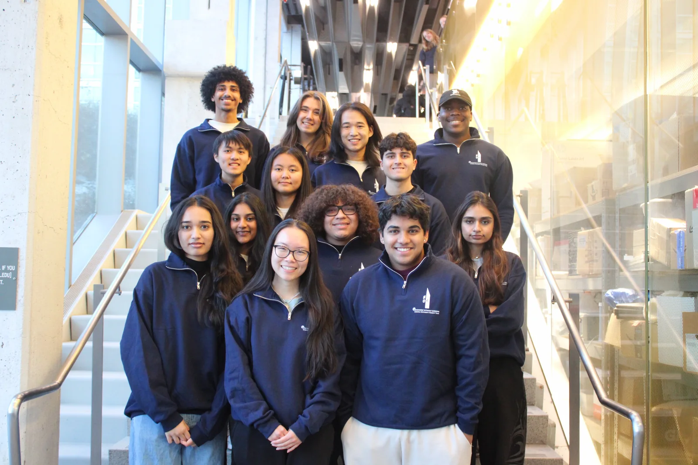

Hardware, software, and machine learning for Zero Waste Ithaca, plus computer vision for agriculture
17Members
3Tracks
Zero Waste IthacaCurrent partner
Subteam Overview
About the Subteam
Last semester, our team began a new partnership with Zero Waste Ithaca (ZWI), a grassroots, volunteer-run nonprofit working to promote zero-waste policies, culture, and environmental justice in the Ithaca/Tompkins County area. One of ZWI's initiatives, the Skip the Stuff Campaign, aims to reduce single-use plastics locally, with the long-term goal of turning the practice into city- and county-wide law.
Our team is supporting this mission by building hardware and software solutions that make zero-waste programs easier for ZWI to run and easier for the community to use.
Three tracks run in parallel: a physical product for ZWI’s food distribution, the web infrastructure the nonprofit runs on, and a computer vision model for crop disease.
Hardware
Reusable CSA Box
We’re designing a reusable container system for use in ZWI’s Community Supported Agriculture (CSA) box distribution.
Materials: Selecting lightweight, food-safe stainless steel for durability and longevity.
Mechanical design: Developing a foldable/flattenable frame for compact storage, with a secure stackable locking mechanism that eliminates the need for plastic cling wrap.
Thermal management: Implementing a fine-mesh design to ensure airflow, preventing vegetable spoilage while maintaining structural integrity.
Potential future projects — “Project Horizon”: We’re also prototyping a wearable-style sensor system with a 3-camera array (front- and side-facing) to capture a wide-angle view of a user’s surroundings. This is in the idea phase, but if implemented, it would be developed in partnership with our ML subteam, which will translate the visual feed into real-time audio feedback. A key design priority is focusing heavily on user acceptance to ensure the final product feels genuinely supportive and helpful, rather than perceived as just another piece of isolating technology that doesn’t improve their daily life.
Software
Digital Infrastructure for ZWI
We’re rebuilding and modernizing ZWI’s web infrastructure so it can scale to support both community outreach and government partnerships.
Migrating “BYO – US Reduces” off an aging WordPress/Bluehost setup that was difficult to maintain and update, including rebuilding the site’s event registration form.
Building a Complaint Tracking System to be a low-maintenance, flexible tool designed to be usable not just by ZWI, but by city and state government sites as well.
Tech stack: Django for the backend, with React.js powering the static BYO campaign outreach site.
Machine Learning
Computer Vision for Agriculture
In parallel, our ML subteam has been focusing on our long-standing project, building an end-to-end computer vision pipeline to detect Northern Leaf Blight (NLB), a common corn disease.
Implementing a two-step model architecture combining a YOLO object detector with a CNN classification step.
Pipeline: Images stored in AWS S3, models built in TensorFlow (with LabelMe for annotation and custom augmentation), trained on AWS EC2/Colab, and containerized with Docker for deployment.
Goals: Deploying the finished model on AWS SageMaker and hosting a public-facing demo, so the tool is freely accessible.
Looking Ahead
Future & Potential Projects
Beyond our current work with ZWI, we’re exploring a new potential collaboration with Professor Max Zhang on a project called EngagedIoT, which would expand our scope into energy, infrastructure, and public health applications across Tompkins County:
Energy Metering: Designing current-transformer-based power meters to monitor energy use at CCE offices and municipal water pumps.
Infrastructure & Health: Building mobile road-surface monitoring tools, microclimate sensors for “dual-use” solar farms, and remote telehealth devices for the county.
Social Impact: Developing privacy-preserving hardware to monitor food cabinet stock levels, supporting local food insecurity efforts.
This would give our team the chance to apply IoT and embedded hardware skills to an even broader range of civic and environmental challenges, including energy systems, public infrastructure, healthcare access, and food security, rooted in direct partnerships with local organizations and researchers.
The Team
Our Members

The Digital Agriculture/IoT subteam
Anna Kuang
Digital Ag/IoT Lead
Computer Science Class of 2028
Michelle Mercer
Digital Ag/IoT Lead
Computer Science Class of 2027
Pradhi Pakkerakari
Digital Ag/IoT Lead
Computer Science Class of 2027
David Mayorga
Talent Officer
Electrical and Computer Engineering Class of 2027
Lahari Bandaru
Board Secretary
Computer Science Class of 2028
Ahmed Shabana
Member
Computer Science Class of 2029
Benjamin Lim
Member
Computer Science Class of 2029
DA
Daniel Anigioro
Member
Computer Engineering Class of 2027
Daniel Lee
Member
Computer Science Class of 2029
Domenic Fioravanti
Member
Computer Science Class of 2027
EI
Eda Isir
Member
Mechanical Engineering Class of 2029
FM
Fatima Moizuddin
Member
Mechanical Engineering Class of 2028
Isabella Guan
Member
Computer Science Class of 2027
Kaden Pedersoli
Member
Electrical and Computer Engineering Class of 2029
MT
Mahitha Thippireddy
Member
Computer Science Class of 2028
US
Urja Saha
Member
Computer Science Class of 2029
Yongjin Lee
Member
Computer Science Class of 2028
Past Project
Check out our past Digital Agriculture project below.
We're a student engineering team that partners with local and regional organizations to build technology that has impact on the real world, from sustainable packaging design to IoT software to applied machine learning. Our ZWI partnership allows members to work across all angles of a project that actually helps people. We bring all pieces of the puzzle together on one product:
Hardware members get hands-on experience with material selection, mechanical design, and sensor integration for a practical physical product.
Software members build and ship infrastructure (Django/React) used by an actual nonprofit and local government.
Machine Learning members take a computer vision model from architecture design through cloud deployment (AWS SageMaker, Docker).
If you're interested in building things that matter for your local community, for sustainability, and for agriculture, we'd love to have you on the team.
Want to join the Digital Agriculture/IoT Subteam?
Hardware, software, and machine learning roles open every semester. No prior experience required.